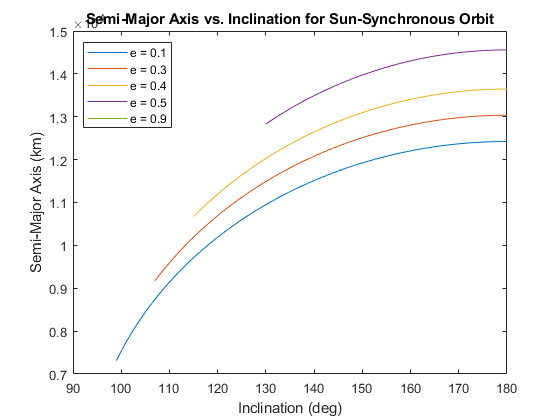
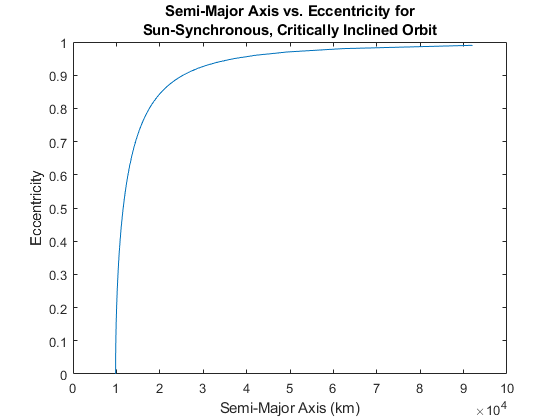

Contents
Problem 5
clear all
clc
a = 8433;
e = .1179;
i = deg2rad(19);
raan = deg2rad(310);
argp = deg2rad(111);
ta = 0;
mu = 398600.4415;
[r,v] = oe2rv(mu,a,e,i,raan,ta,argp);
rmag = norm(r);
vmag = norm(v);
h = cross(r,v);
hmag = norm(h);
p = (hmag^2)/mu;
rp = p/(1+e);
raold = p/(1-e);
ranew = raold+300;
awant = (ranew+rp)/2;
vhave = vmag;
vwant = sqrt(mu*((2/rp)-(1/awant)));
deltav = abs(vhave - vwant)
dvr = [0 0 0]'
dvtan = deltav.*(cross(h,r)/(norm(cross(h,r))))
If given angle related to singularities, put in input 7 (argp).
deltav =
0.0532
dvr =
0
0
0
dvtan =
-0.0457
0.0265
-0.0062
Problem 6
clear all
clc
mu = 398600.4415;
re = 6378.1363;
nr = 1.991e-7;
j2 = 0.00108248;
e = [0.1 0.3 0.4 0.5 0.9]';
sma = @(i,e) (( -3*sqrt(mu)*j2*(re^2).*cos(i) )./(2*nr*(1-e.^2).^2) ).^(2/7);
i = deg2rad(95:1:180);
a = sma(i, e);
p = a.*(1-e.^2);
rp = p./(1+e);
for j = 1:length(a)
for k = 1:length(a(:,1))
if rp(k,j) < re
a(k,j) = NaN;
end
end
end
fig = 1;
figure(fig)
plot(rad2deg(i),a(1,:))
hold on
plot(rad2deg(i),a(2,:))
plot(rad2deg(i),a(3,:))
plot(rad2deg(i),a(4,:))
plot(rad2deg(i),a(5,:))
xlabel('Inclination (deg)')
ylabel('Semi-Major Axis (km)')
legend({'e = 0.1','e = 0.3','e = 0.4','e = 0.5','e = 0.9'},'Location','northwest')
title('Semi-Major Axis vs. Inclination for Sun-Synchronous Orbit')

Problem 7
clear all
clc
mu = 398600.4415;
re = 6378.1363;
nr = 1.991e-7;
j2 = 0.00108248;
i = deg2rad(116.5650512);
e = 0:0.01:0.99;
sma = @(i,e) (( -3*sqrt(mu)*j2*(re^2).*cos(i) )./(2*nr*(1-e.^2).^2) ).^(2/7);
a = sma(i,e);
fig = 2;
figure(fig)
plot(a,e)
xlabel('Semi-Major Axis (km)')
ylabel('Eccentricity')
title({'Semi-Major Axis vs. Eccentricity for';'Sun-Synchronous, Critically Inclined Orbit'})
